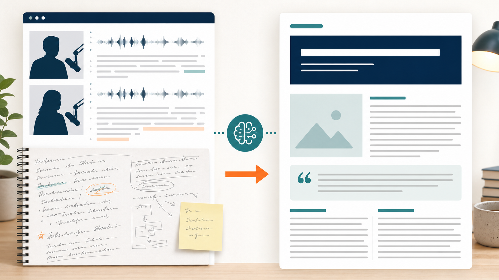

Промтзилла
Из интервью получается сильная статья, если ИИ не просто переписывает речь, а собирает тему, конфликт, цитаты и логичную структуру.

Пошаговая инструкция
- 1Сначала получи расшифровку интервью.
- 2Отметь, какие цитаты нельзя менять.
- 3Попроси ИИ выделить темы, факты и главный тезис.
- 4Сгенерируй структуру статьи с лидом и подзаголовками.
- 5После черновика попроси проверить, нет ли выдуманных фактов.
Какой результат просить
Нужен журналистский черновик: понятный лид, цитаты в контексте, подзаголовки и финальный вывод. Под такую задачу удобно открыть Study24 AI, дать исходник и сразу попросить структурированный результат.
Промт
RU
Преврати это видеоинтервью или расшифровку в статью. Материал: [вставь расшифровку] Сделай: — сильный лид; — логичную структуру статьи; — подзаголовки; — ключевые цитаты без искажения смысла; — объяснение контекста; — финальный вывод. Важно: — не выдумывай факты, биографию, цифры и источники; — не приписывай человеку то, чего он не говорил; — разговорную речь можно редактировать, но смысл цитат сохраняй; — спорные места помечай как требующие проверки.
EN
Turn this video interview or transcript into an article. Material: [paste transcript] Create: — a strong lead; — a logical article structure; — subheadings; — key quotes without changing their meaning; — context explanation; — final takeaway. Important: — do not invent facts, biography, numbers, or sources; — do not attribute statements the person did not make; — spoken language may be edited, but quote meaning must be preserved; — mark uncertain parts as requiring verification.
Важно
Для публикации обязательно сверяй цитаты с оригиналом. Ошибка в цитате хуже обычной стилистической неточности.
Теги